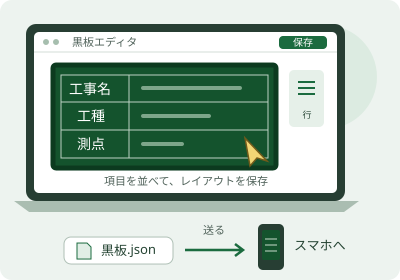
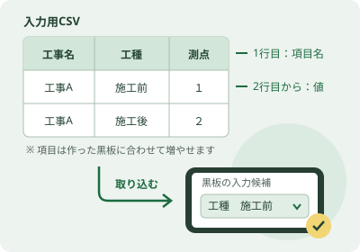
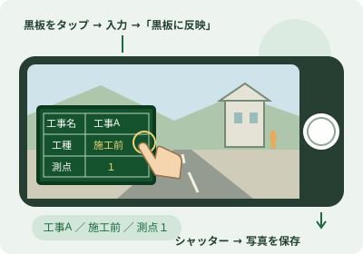

使い方ガイド
黒板を準備して、撮影・保存する
黒板の見た目はPC エディタかスマホで作り、工種や測点などの候補をCSVから取り込めます。撮影後は写真DLと一覧表DLで、必要なものをそれぞれ保存します。
写真はJPEG、一覧表はExcelまたはCSVで保存します。撮影・黒板の編集・保存は、電波の届かない現場でもスマホの中で完結します。
このガイドは「写真DL」「一覧表DL」がある版の操作を説明しています。旧版をお使いの場合は、アプリ更新後にご利用ください。
| 業務名 | 水質調査業務 |
|---|---|
| 地点名 | ① |
| 時間 | 10:30 |
| 年月日 | 2026年9月14日 |
| 施工業者 | （株）サンプル建設 |
全体の流れ
まず黒板の形を作り、次に書く内容を登録し、現場で撮影します。ここでは「工事A・施工前・測点１」を例に、写真の保存まで説明します。
撮影には、サッと黒板アプリを入れたAndroidスマホを使います。図は操作のイメージです。すでにある黒板を使う場合は①の作成を省略でき、内容をその場で入力する場合は②のCSV準備を省略できます。
-
1黒板を作る

項目と配置を決めます。工事名や日時などは、工事の情報・撮影時刻から自動で入れる設定もできます。 写真に写す黒板のひな形を用意する
- PC版エディタを開く→新規作成→下の道具箱の行で作るを押します。
- 「工事名・工種・細別・測点・受注者」などを並べ、「入る値」が対応する項目になっていることを確認。黒板に置く→右上の保存を押します。
- テンプレート一覧のファイルに保存でJSONを保存。メールやGoogle ドライブなどでスマホへ送り、端末に保存します。
- スマホの「工事一覧」右上「テンプレート」→右上のJSON を取り込むで、そのファイルを選びます。
ここまでで：スマホで使える黒板のひな形ができます。
スマホだけでも作れます。「工事一覧」右上「テンプレート」→「新規作成」から、同じように項目を並べ、「黒板に置く」→「保存」を押します。
黒板を作る詳しい手順 → -
2記載情報を登録する

CSVの1行が、撮影時に選べる内容の組み合わせになります。 黒板に書く内容を、まとめて用意する
- PCのテンプレート一覧でCSVひな形を保存。CSVを編集できる表計算ソフトで開き、1行目は項目名のまま、2行目から1行につき1組の値を入力し、CSV形式で保存します。
- 記入済みCSVをスマホへ送り、端末に保存します。
- スマホの「工事一覧」右上「テンプレート」で使う黒板を「編集」。下の道具箱を右端まで送り、入力欄・Excel→表を取り込む（Excel / CSV）でCSVを選びます。表がある場合は「取り込み直す」を押します。
- 「1行目は見出し」「列ごとに『選ぶ項目』を作る」をオンにし、取り込む→決定→右上の保存を押します。
ここまでで：工種や測点を、候補から選べるようになります。
CSVは任意です。件数が少なければ③で黒板をタップして直接入力できます。撮影日時・連番は自動で入ります。CSVの候補は黒板に保存され、同じ黒板を使う他の工事でも共有されます。
CSVを取り込む詳しい手順 → -
3撮影する

選んだ内容が黒板に入り、現場の写真と一緒に写ります。 現場で内容を選んで、シャッターを押す
- 「工事一覧」で工事を追加→工事名「工事A」を入力→工事を作成して始める。工事の右上「設定」→「黒板」で用意した黒板を選び、工事画面へ戻ります。
- 工事画面のそのまま撮影を押します。初回はカメラの使用を許可し、撮影種別を「黒板つき」にします。
- 黒板をタップし、工事名→工種→細別→測点など、上から順に候補を選ぶか直接入力。黒板に反映を押して、画面に入った内容を確認します。
- 写真を施工前・施工後に分類する場合は、撮影画面の施工前／施工後も選びます。黒板に「施工前」と入力する操作とは別の設定です。
- 黒板をなぞって移動し、四隅をつまんで大きさを調整して、シャッターを押します。通常は自動保存。撮影後の確認をオンにしている場合は採用を押して保存します。
できあがり：記載情報が入った黒板付きの写真が、アプリに保存されます。
次の場所では、黒板をタップして測点などを変え、「黒板に反映」→撮影を繰り返します。工事画面の「写真」タブで、保存された写真を確認できます。
撮影する詳しい手順 →
ファイルの役割を確認する
| ファイル | 使う場面 | 中身・保存先 |
|---|---|---|
| 黒板の .json | PCで作った黒板をスマホへ渡す | 黒板の見た目と設定。取り込み済みの候補表も含みます。「黒板テンプレート」画面で取り込みます。 |
| 入力用 .csv | 撮影前に入力候補を準備する | 1行目は黒板の項目名、2行目から候補の組み合わせ。対象の黒板の「入力欄・Excel」で取り込みます。 |
| 写真の .JPG | 撮影した写真を保存・受け渡しする | 黒板を写し込んだ写真。「写真DL」で端末の写真フォルダ「工事写真」へ保存します。 |
| 写真一覧 .csv / .xlsx | 撮影後に写真の記録を確認・利用する | 写真1枚につき1行の一覧。「一覧表DL」で形式を選び、保存先を指定します。 |
PC エディタで黒板を作る
インストール不要・無料。パソコンのブラウザで開きます。スマホアプリの「テンプレート」→新規作成/編集でも同じエディタが開きます（クリックはタップ、ダブルクリックはダブルタップに読み替えてください）。
開く・保存のしくみ
公開版は PC版エディタ（このサイト内）です。開くと、テンプレートの一覧が並びます。
| ボタン | できること |
|---|---|
| 新規作成 | 白紙の黒板からエディタを開く |
| 編集 | そのテンプレートをエディタで開く |
| ファイルに保存 | テンプレートを .json ファイルとしてパソコンに保存する |
| CSVひな形 | 黒板に置いた差し込み項目を1行目にした、記入用の .csv を保存する |
| ファイルを読み込む | 画面右上。保存しておいた .json を一覧に戻す |
| 削除 | 一覧から消す（確認があります） |
黒板に入れるデータのCSVを作る
- 黒板に「工事名」「工種」「種別」「細別」「測点」などの差し込み項目を置き、保存する
- テンプレート一覧のCSVひな形を押す。1行目が項目名のCSVがダウンロードされる
- CSVを編集できる表計算ソフトで開き、2行目から1行につき1組の値を入力して、CSVとして保存する
Excelがなくても、CSVに対応した表計算ソフトで編集できます。1行目の項目名と並び順はそのままにします。
- 記入済みCSVをメール・Google ドライブ・USBなどでスマホへ送り、端末に保存する
- スマホで対象の黒板に取り込む（入力用CSVを黒板に取り込む）
入力例：横に項目、縦に候補を並べる
列は項目ごとに使い、行は候補ごとに増やします。たとえば、この表の2〜6行目には5組の候補があります。実際の項目名は、作った黒板に合わせて変わります。
| A | B | C | D | E | F | |
|---|---|---|---|---|---|---|
| 1 | 工事名 | 工種 | 種別 | 細別 | 測点 | 受注者 |
| 2 | 工事A | 施工前 | A | １ | ○○建設株式会社 | |
| 3 | 工事A | 施工前 | B | ２ | ○○建設株式会社 | |
| 4 | 工事A | 施工後 | C | ３ | ○○建設株式会社 | |
| 5 | 工事A | 施工後 | D | ４ | ○○建設株式会社 | |
| 6 | 工事A | 施工後 | E | ５ | ○○建設株式会社 |
撮影時は1行目の項目名が入力欄になり、上から順に値を選べます。CSVの行は組み合わせの候補です。撮影日時・連番はアプリが自動で入れるため、ひな形の列には含まれません。
行を並べて黒板を作る（いちばん簡単な方法）
「業務名・地点名・時間・年月日・施工業者」のように、項目を上から並べるだけで黒板いっぱいの表になります。罫線や位置を自分で合わせる必要はありません。
- エディタ下の道具箱の左端にある行で作るを押す
白紙の黒板なら、真ん中の行を並べて作るからも開けます。
- 各行の「項目名」を入力する
足りなければ行を足す、順番は上へで入れ替え、要らない行はごみ箱で消します。
- 「入る値」を確かめる
項目名から自動で推測されます。「年月日」なら撮影した日付、「時間」なら撮影した時刻が、撮るたびに自動で入ります。違っていれば右のプルダウンで選び直し、固定の文字にしたいときは「手で入れる文字」を選びます。
- 黒板に置くを押す
黒板にすでに要素があるときは、置き換えるか上に追加するかを選べます。
- 右上の保存を押す
罫線を手で引く
フリーハンドでなぞった線は、まっすぐな罫線に整えられます。
- 道具箱の線を引くを押す
- 黒板の上をドラッグして線をなぞる
水平・垂直に近い線はぴったり水平・垂直に揃い、近くの枠や線に吸い付きます。
- 引き終わったら、もう一度線を引くを押して終える
引いた線はクリックで選べます。細い線でもつかみやすいよう、選べる幅を広くしてあります。
文字を直す・自動で入れる
- 選ぶ：黒板上の文字や表をクリック。選ぶと画面下に文字の入力欄が出て、そのまま書き換えられます。
- 中身を編集する：ダブルクリック、または道具箱の編集。
- 大きさ：入力欄の横の「文字を大きく／小さく」で調整します。
- 自動で入れる：入力欄の横の「自動で入れる値」（稲妻のボタン）から、撮影日・時刻・工事名などを選ぶと、撮影のたびに値が入ります。項目名の文字を選んでいるときは、合いそうな値を提案します。
- 黒板いっぱいに広げる：選んだ要素を全体に広げるで、黒板の枠の内側いっぱいにします。
画面上部には元に戻す/やり直す、位置を揃える「スナップ」、はみ出しなどを知らせる「レイアウトの注意」、写真に重ねて見る「実写で確認」があります。
表を編む
表を選ぶと、道具箱に罫線が現れます。押すと「表を編む」画面が開き、Excel と同じ感覚で操作できます。
- セルをドラッグして範囲を選び、「罫線」で線を引く・消す
- 「行や列を挿入・削除」で表の形を変える
- 複数のセルを選んで結合する（結合前に確認があります）
- 項目名のセルを入力すると、右隣のセルに合う値を自動で入れます
- Ctrl+Z で元に戻す、Ctrl+Y でやり直す。終わったら完了
Excel の表から選ばせる（業務名 → 地点名）
業務名と地点名を Excel にまとめておくと、撮影のときにプルダウンで選べます。業務名を選ぶと、地点名はその業務の地点だけに絞られます。100 業務あっても、1 つのファイルで足ります。
Excel の書き方
| A | B | |
|---|---|---|
| 1 | 業務名 | 地点名 |
| 2 | 水質調査業務 | ① |
| 3 | ② | |
| 4 | ③ | |
| 5 | ④ | |
| 6 | ⑤ | |
| 7 | 地質調査業務 | B-1 |
| 8 | B-2 |
.xlsx または .csv
- A 列に業務名、B 列に地点名。3 段にしたいときは C 列を足します（例：業務 → 地区 → 地点）。
- 同じ業務名が続く行は、空欄のままで構いません。上の行の業務名で埋めて読みます（セル結合も同じ扱い）。
- 1 行目は見出しでも、いきなり中身でも構いません。取り込むときに切り替えられます。
- シートが複数あるときは、取り込むときにシートを選びます。
エディタでの設定
- 道具箱を右端まで送り、入力欄・Excelを押す
- 表を取り込む（Excel / CSV）を押し、ファイルを選ぶ
- 確認画面で「1行目は見出し」が合っているか見る
先頭 8 行と「7 行・2 列（空欄は上の行の値で埋めています）」のような件数が出ます。「列ごとに「選ぶ項目」を作る」は入れたままにします。
- 取り込むを押す
「業務名 表のA列から選ぶ」「地点名 表のB列から選ぶ」の入力欄ができます。見出しが無いときは「A列」「B列」という名前になります。
- 決定を押し、行で作るで項目名を「業務名」「地点名」にする
入る値が「撮影時に選ぶ：業務名」「撮影時に選ぶ：地点名」になります。見本として Excel の 1 行目の値が黒板に出ます。
- 黒板に置く → 保存
撮影するときの見え方
- 絞り込みは、入力欄の上にあるものから順に効きます。並び順は入力欄・Excelの上矢印で変えられます。
- 件数が多いときは、欄に文字を打つと候補が絞れます。
- 業務名を選び直すと、合わなくなった地点名は自動で外れます。
道具箱の一覧
エディタ下の道具箱は横にスクロールします。要素を選んでいないと押せないボタンは薄く表示されます。
| まとまり | ボタン |
|---|---|
| 簡単に作る | 行で作る 線を引く |
| 置く | 文字 差し込み 表 図形 矢印 線 画像 手書き コード 計測値 押してから黒板をクリックした位置に置かれます |
| 選んだものを操作 | 編集 全体に広げる 罫線 数値 施錠 伏せる 一覧 複製 削除 まとめる ほどく |
| 重なり | 最前面 前へ 後ろへ 最背面 |
| 黒板全体 | 入力欄・Excel 黒板全体 |
- 差し込み：撮影日や工事名など、撮るたびに変わる値を置きます。
- 数値：位置と大きさを % で細かく指定します。
- 施錠/伏せる：誤って動かさないよう固定する／一時的に隠す。戻すときは一覧から。
- 黒板全体：黒板の縦横比・背景色・枠を変えます。
スマホへ送る
- エディタ右上の保存で一覧に戻る
- テンプレートのカードのファイルに保存を押し、.json ファイルを保存する
- そのファイルをメール・Google ドライブ・USB などでスマホへ送る
- アプリで取り込む（次の章）
サッと黒板アプリで撮影する
Android 10 以降。写真・黒板・工事の情報は端末の中にだけ保存され、外部へは送信されません。
工事を作る
- 「工事一覧」で工事を追加を押す
- 「工事名（必須）」を入れる
工事番号・発注者・受注者は「工事の詳しい情報（任意）」から、あとで足しても構いません。
- 工事を作成して始めるを押す
工事のメニューから工事を複製を選ぶと、黒板・撮影項目・設定を引き継いだ新しい工事を作れます（写真と撮影履歴は引き継ぎません）。
黒板を取り込んで、工事で選ぶ
PC で作った黒板を取り込む
- 工事一覧の右上にある「テンプレート」を開く
- 「黒板テンプレート」画面の右上「JSON を取り込む」を押し、送った .json ファイルを選ぶ
「「◯◯」を取り込みました」と出れば完了です。一覧から編集・複製もできます。
工事で使う黒板を選ぶ
- 工事の画面の右上「設定」を開く
- 「黒板」の欄に並ぶ黒板の見本から、使うものを押す
見本には、その工事の情報と今日の日付が入った状態で表示されます。
入力用CSVをスマホの黒板に取り込む
スマホに保存した記入済みCSVを、使う黒板テンプレートの入力候補にします。PCで作った黒板へ取り込む場合は、先にその黒板のJSONを取り込んでおきます。
- 工事一覧の右上「テンプレート」から「黒板テンプレート」を開く
- 使う黒板のメニューから編集を選ぶ
- 下の道具箱を右端まで送り、入力欄・Excel → 表を取り込む（Excel / CSV）を押す
候補表がすでに入っている場合は取り込み直すと表示されます。
- スマホに保存した入力用CSVを選ぶ
- 確認画面で「1行目は見出し」と「列ごとに『選ぶ項目』を作る」をオンにし、項目名と候補の行数を確かめて取り込むを押す
- 決定 → エディタ右上の保存を押す
工事の設定でその黒板を選ぶと、撮影時にCSVの候補を選べます。上の項目で選んだ値に合わせて、下の項目の候補が絞られます。上の例では、工種に「施工前」を選ぶと、細別は「A」「B」、測点はその細別に対応するものから選べます。
撮影項目を入れる
工種や測点などの撮影項目を用意しておくと、撮影時に一覧から選べ、まだ撮っていない項目の数もわかります。
ここでは工事の「何を撮るか」の一覧を作ります。黒板に入力する候補を設定するときは、入力用CSVを黒板に取り込むの手順を使います。
- Excel でまとめて入れる：工事の画面の「撮影項目」タブでExcel／CSV を取り込む。見出しは「写真区分・工種・種別・細別・測点」を読み取ります。記入用の Excel を配ることもできます。
- 取り込み直す：追加・更新・削除・変更なしの件数を確かめてから反映します。
- その場で足す：「この場で項目を追加」から 1 件ずつ。
撮影する
- 工事一覧の撮影する、または工事画面のそのまま撮影を押す。撮影項目の登録なしで始められます
撮影項目を登録済みなら、その項目を押して撮影画面を開くこともできます。撮影画面の項目欄を押すと、別の項目や項目なしで撮るを選べます。
- 撮影種別を黒板つきにする。初回にカメラの使用許可を求められたら許可する
- 画面上の黒板をタップして内容を入力・選択する
CSVやExcelの候補表を取り込んだ黒板なら、工事名 → 工種 → 細別 → 測点など、上の項目から順に選び、黒板に反映を押します。CSVの準備を省略した場合は、ここで直接入力できます。
- 写真の分類を通常／施工前／施工後から選ぶ
この分類は写真一覧の絞り込みに使います。黒板に書く文字とは別に選んでください。
- シャッターを押す
通常はそのまま保存して続けて撮影できます。撮影後の確認をオンにしている場合は、確認画面で採用/撮り直す/破棄を選びます。
続けて撮るときは次の未撮影で、まだ撮っていない項目へ進めます。
撮影画面の操作
| 操作 | 内容 |
|---|---|
| 黒板の内容を変える | 黒板をタップして、工種・測点などを入力または候補から選び、「黒板に反映」を押す |
| 黒板を動かす | 黒板をなぞって移動、四隅をつまんで拡大縮小。「黒板の置き方」から90度回す・定位置へ寄せる・透け具合 |
| 黒板をどける | 「黒板を一時的にどける」。端のタブで戻せます。写真には写ります |
| 水準器・グリッド | 傾きの確認と構図合わせ |
| ピント・ズーム | タップでピント合わせ、ピンチでズーム |
| フラッシュ | 点灯の切り替え |
| 画面の明るさ | 撮影画面にいる間だけ明るくします（端末の設定より暗くはしません） |
端末を横に回すと、黒板の向きも追従します。
日時の記録
シャッターを切った瞬間の端末時計の時刻は、どの設定でも写真に記録され、アプリ内では変更できません。そのうえで、黒板に表示する日時を工事の設定の「日時の記録」で選びます。
| 設定 | 黒板に出る日時 |
|---|---|
| 実時刻 | シャッターを切った時刻をそのまま出す |
| 丸める | 区切りのよい時刻に寄せて出す（何分単位か、四捨五入・切り上げ・切り捨てを選ぶ） |
| 日時を指定する | 指定した日時を出す。既定では次の写真にも同じ日時を使います。「撮影のたびに指定する」をオンにすると、1枚ごとに指定し直します。日時の変え忘れに注意してください。 |
黒板の日時と実際の撮影時刻が違う写真は、写真一覧の絞り込み「日時がずれている写真だけ」で探せます。
写真と一覧表を、それぞれ保存する
工事の写真タブを開きます。上部に写真DL（○枚）と一覧表DLが並びます。写真だけ、一覧表だけ、両方のどれでも保存できます。どちらのボタンもZIPにはまとめません。
保存する写真を絞る
検索欄に工種・測点などを入力するか、「絞り込み」で撮影日・撮影項目・日時の記録などを選びます。「施工前」「施工後」の切り替えも使えます。写真DLと一覧表DLは、どちらもいま一覧に表示されている写真が対象です。写真DLのボタンに出る枚数を確認してください。
写真DL：JPEGを保存する
- 保存したい写真が一覧に表示されていることを確かめる
- 写真DL（○枚）を押し、保存が終わるまで待つ
- 「○枚を写真フォルダ『工事写真』に保存しました」と出たら、端末の写真アプリで「工事写真」を開く
ファイル管理アプリでは、端末内の「Pictures」→「工事写真」からJPEGを確認できます。そこから必要な写真を共有できます。
黒板が写し込まれた写真を、JPEGファイルのまま保存します。名前は工事の設定の命名規則を使い、同じ対象の一覧表に載るファイル名と揃えます。アプリ内の写真も引き続き閲覧できます。
一部の保存に失敗した場合は、保存できた枚数と失敗した枚数が表示されます。保存できた写真だけが「書き出し済み」になります。
一覧表DL：CSVまたはExcelを保存する
- 一覧表に含めたい写真が一覧に表示されていることを確かめる
- 一覧表DLを押す
- Excel（.xlsx）またはCSV（.csv）を選ぶ
- 端末の保存画面で保存先とファイル名を確認し、保存する
例：
工事A_写真一覧.xlsxまたは工事A_写真一覧.csv。保存先はダウンロードフォルダなどを選べます。
写真1枚につき1行の一覧です。ファイル名・連番・施工区分・写真区分・工種・種別・細別・測点に加え、表示する撮影日時と実撮影日時、日時のずれ、撮影種別・準拠・画素数・ファイルサイズを記録します。
| 形式 | 用途 | 表記の扱い |
|---|---|---|
| Excel（.xlsx） | 一覧を開いて確認・編集する | すべて文字列として保存するため、001などの先頭のゼロや測点の表記を維持できます。 |
| CSV（.csv） | 写真管理ソフトなどへ取り込む | 日本語を扱えるUTF-8形式です。開くソフトによっては番号や日付が自動変換されるので、取り込み時に列を文字列として指定してください。 |
CSVとExcelに入る項目・値は同じです。必要な形式を1つ選べばよく、両方ほしい場合はもう一度一覧表DLから別の形式を保存します。
一覧表だけを保存した場合や、保存画面をキャンセルした場合は、写真を「書き出し済み」にしません。
写真台帳・電子納品・容量を空ける
- 写真台帳PDF：写真台帳PDFから作成・共有します。1回300枚までなので、多いときは絞り込んでから作ります。
- 電子納品：工事の画面右上「電子納品」で点検し、PHOTO フォルダを書き出すを押します。PHOTO.XMLと所定のフォルダ構成を含む専用のZIPを作ります。
- 容量を空ける：「書き出し済みを消す」で、写真DLなどで書き出し済みになった写真を削除できます。アプリ内から削除する前に、保存先の写真を確認してください。
バックアップ
写真は端末の中にしかありません。端末の故障や紛失に備えて、工事一覧の右上「バックアップ」から定期的にバックアップを作るを行い、できた ZIP を別の場所（パソコンやクラウド）へ移してください。
設定と購入
工事一覧の右上「アプリの設定」で変更します。
- 起動したらすぐ撮影画面を開く：現場ですぐ撮りたいとき。
- 撮影中の画面の明るさ：屋外で見やすくします。
- アプリロック：4 桁以上の PIN を決めると、次に開くときから PIN を訊きます。
- 購入：50 枚までは無料で撮影できます。一度購入すると、以後は枚数の制限なく撮影できます。機種変更や入れ直しのあとは、同じ Google アカウントでここから復元します。
無料枠を使い切っても、撮影済みの写真の閲覧・書き出し・写真台帳の作成・黒板の編集はこれまでどおり使えます。
ご利用前の注意
- 「日時を指定する」で撮った写真の表示日時は、撮影者が入れた値です。
- 撮影データは端末内にのみ保存されます。定期的なバックアップをお願いします。
- PC エディタの黒板はブラウザの中にだけ保存されます。大事な黒板はファイルに保存してください。